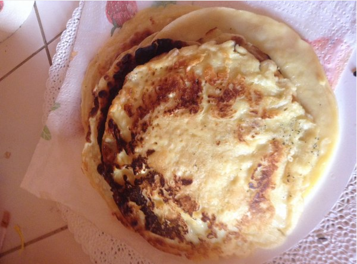

Recette crêpes
Pour 20 crêpes :
- 25cl de bière
- 3 cuillères à soupe d'huile
- 1L de lait
- 500g de farine
- 5 oeufs
Ustensiles:
- 1 louche
- 1 saladier
- 1 poêle
- 1 cuillère en bois
Préparation
- Dans un saladier verser la moitié de la farine, puis rajouter les oeufs un à un, rajouter ensuite un peu de lait puis de la farine puis à nouveau du lait et ainsi de suite.
- Enfin rajouter l'huile et la bière.
- Laisser reposer 1 heure, votre pâte est prête.
- Faire chauffer un fond d'huile dans une poêle.
- Puis mettre une louche de pâte à crêpes et laissser cuire un coté aprés l'autre.
- Faire de même autant que possible avec le reste de pâte.
- Dégustez!!!!!!!
Et surtout n'oubliez pas l'objectif summer body!!!!
Source
